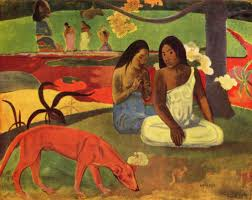
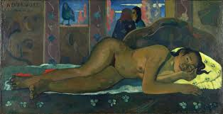
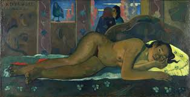

Paul Gauguin
Gauguin fu anche una figura importante nel movimento simbolista come pittore, scultore, incisore, ceramista e scrittore. La sua espressione del significato intrinseco dei soggetti nei suoi dipinti, sotto l'influenza dello stile cloisonnista e dell'arte giapponese, ha aperto la strada al primitivismo e al ritorno alla pastorale.



 
